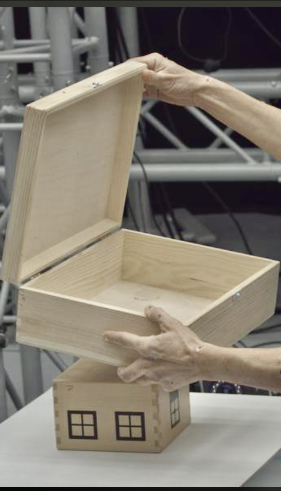

TL;DR: Create 4D rigs and models of any deformable object without templates from a single video.
Interactive Results
Explore our scenes in 4D, converted to Gaussian Splats.
How it works
From a single monocular video, our RAT4D method utilizes a sophisticated nonlinear optimization process to refine detected 2D landmarks into accurate 3D poses, free from the constraints of predefined templates. These refined poses are then processed through a template-free Gaussian splatting renderer to create re-animatable and high-fidelity 3D models. The entire process, from image input to 3D model generation, is designed to be efficient, typically completing within a few minutes.
Detailed analysis of our method
Input

Method overview
RAT4D leverages a nonlinear optimization framework to enhance the fidelity of 3D poses from monocular sequences (single images used as input), and is engineered to refine these into detailed 3D skeletal models that can be dynamically re-posed and animated. This process utilizes state-of-the-art techniques in 3D lifting and Gaussian splatting, comparable to the methods used in template-based modeling but without their limitations. The optimized 3D models are then capable of being used in high-quality visual applications, bridging the gap between simple inputs and complex 3D outputs